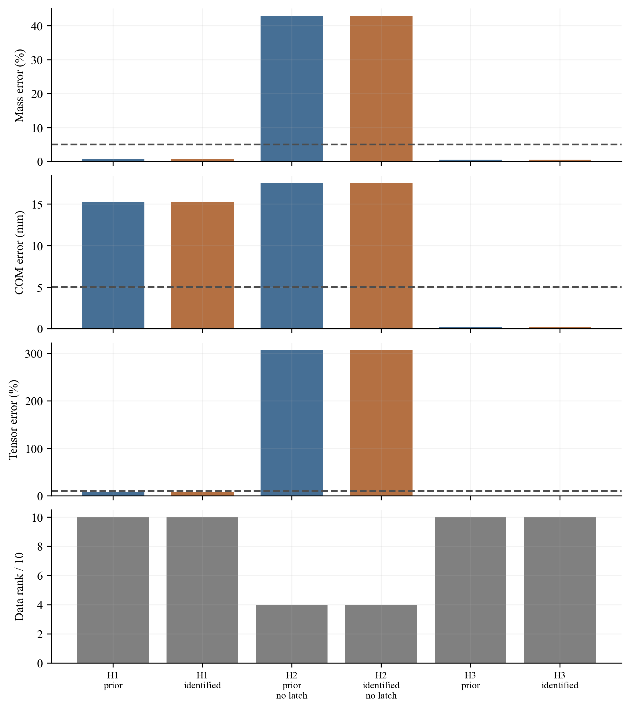
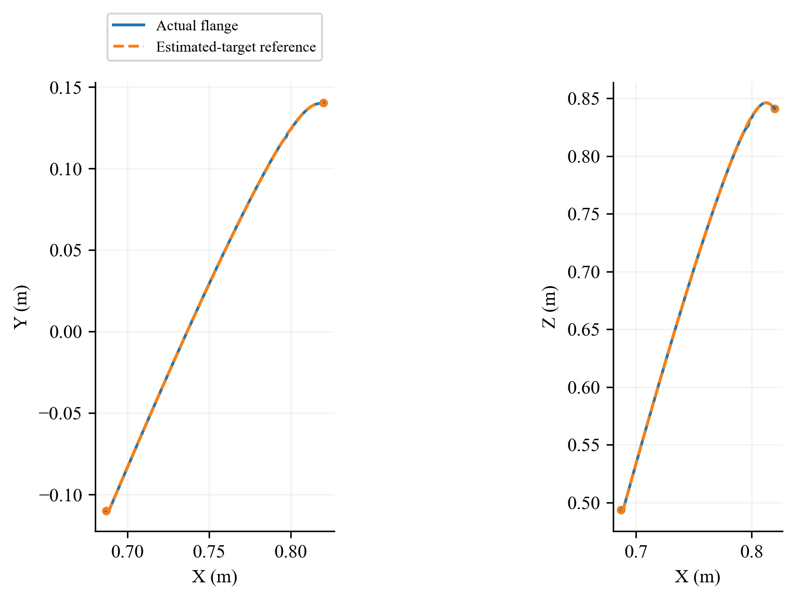
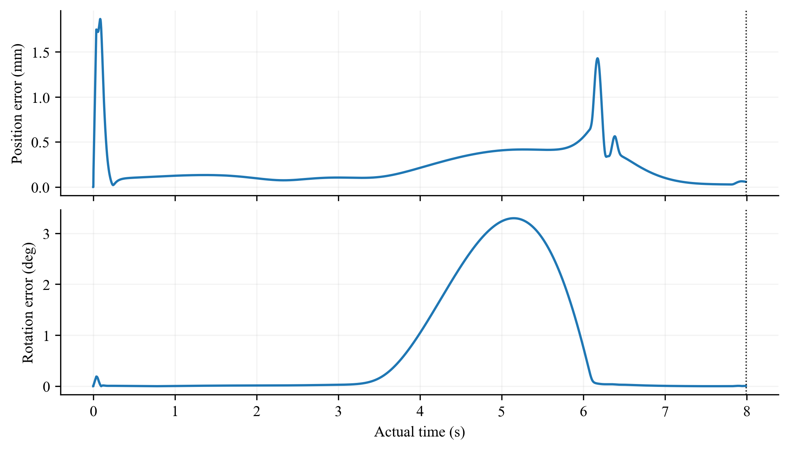
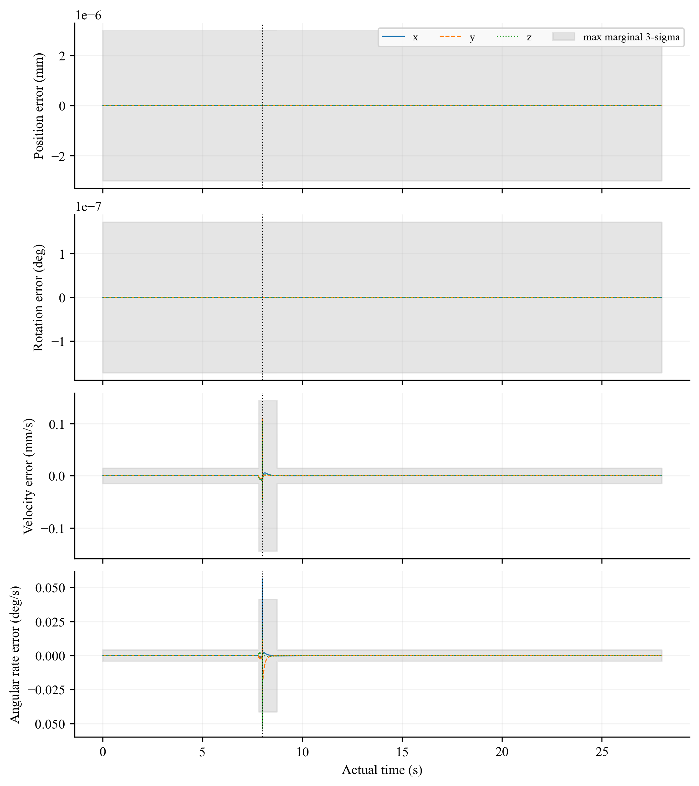
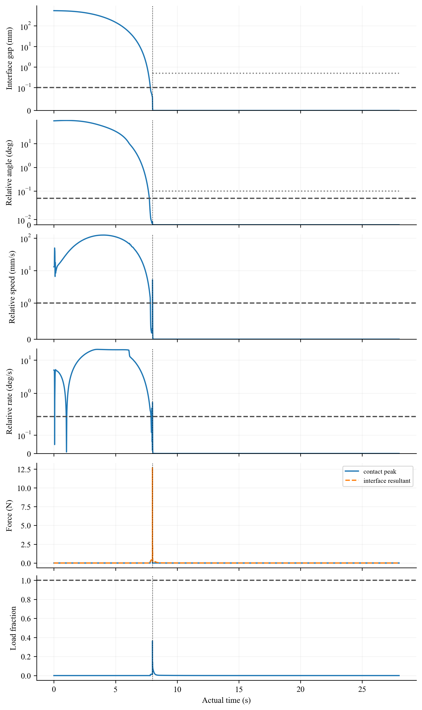
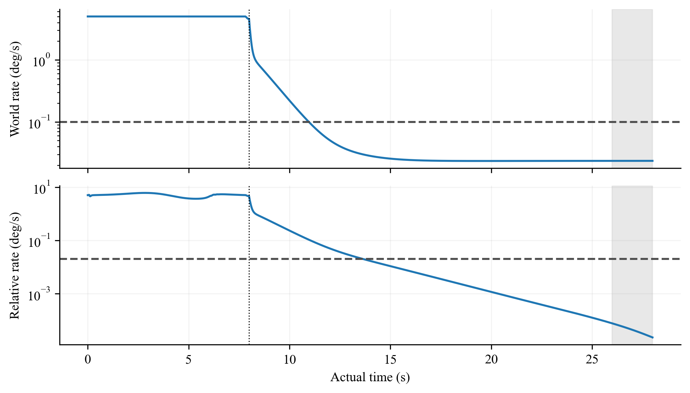
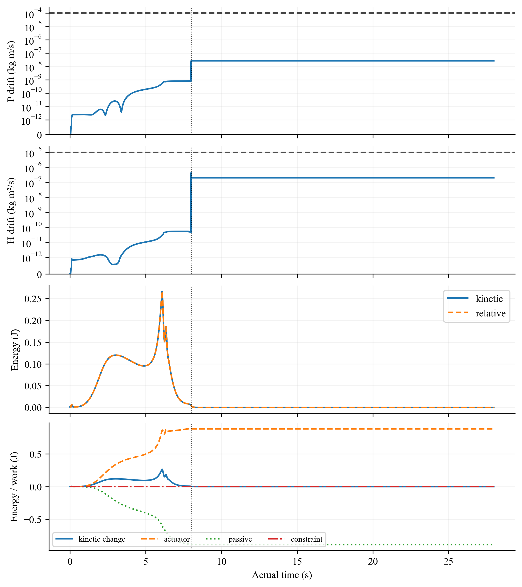
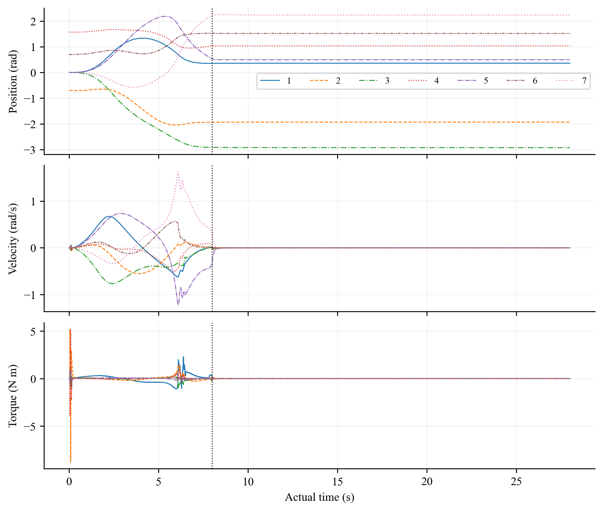
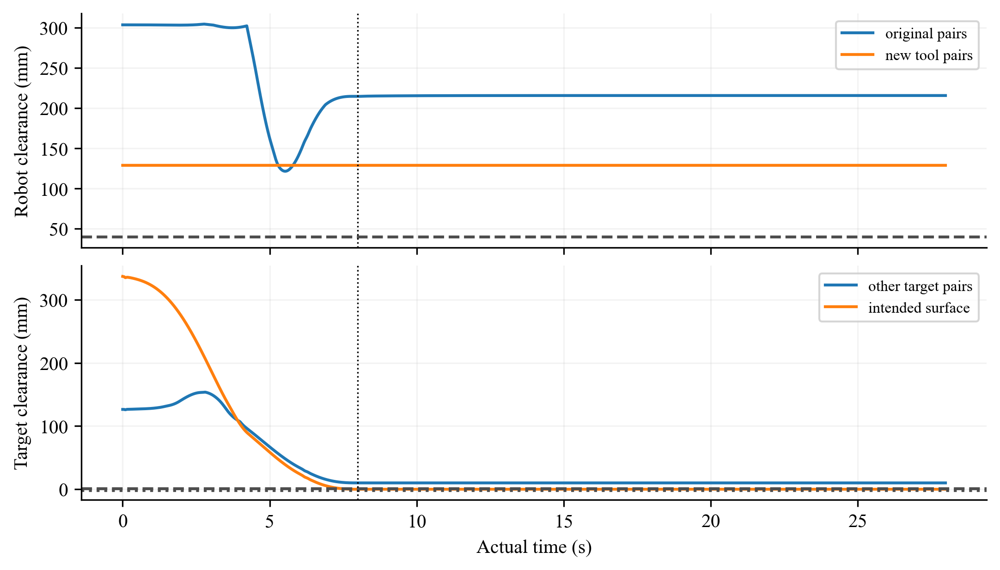
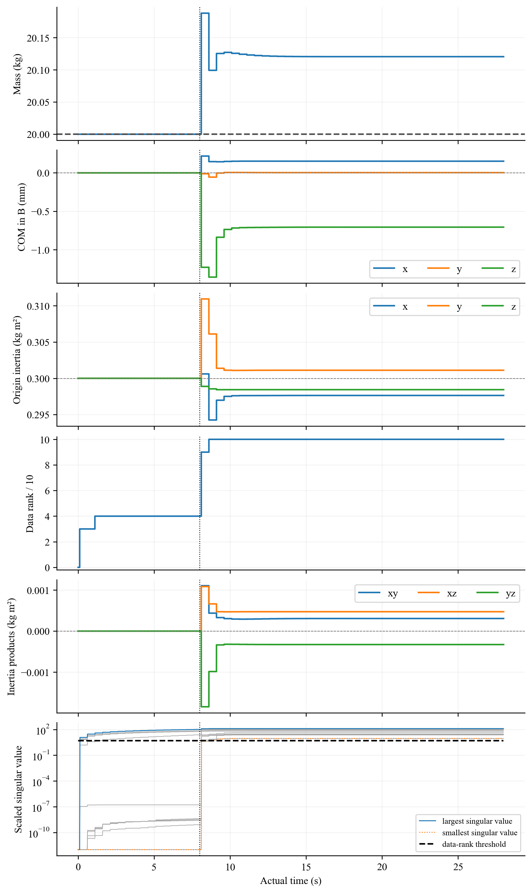

Outcome: COMPLETED. Continuous task: True; fixed-window detumbling: True. Natural-task full inertia identification: unvalidated.
Simulation sensors, passive target, equivalent software latch. No hardware load, physical gripper, real-vision or real-time claim. Historical N206 results remain separate.
Report · All attempts · Qualification
Independent target cases: final parameter errors and data rank for prior/identified control modes. COM error is Euclidean distance; tensor error is relative Frobenius error of COM-centered inertia. Dashed lines are preregistered accuracy targets; full rank does not guarantee those errors pass. Source runs: H1_prior, H1_identified, H2_prior, H2_identified, H3_prior, H3_identified. H1: COMPLETED at 27.932 s, latched; H2: HQP_FAILED at 7.820 s, no latch; H3: COMPLETED at 27.932 s, latched. H2 never used parameter feedback. Errors use evaluation-only truth; unequal actual horizons are retained. Control-mode names do not imply parameter use; consult comparison.json.

World XY/XZ projections of actual flange and live estimated-target reference, only while approach reference is applicable. Equal spatial scales; solid actual, dashed reference. Run D06_final_gain3; sensor ideal; actual interval 0.000–27.992 s; latch 7.992 s; outcome COMPLETED; full evaluation window True; parameter feedback used False.

Actual flange versus live estimated-target reference during approach; reference is inactive after latch. Run D06_final_gain3; sensor ideal; actual interval 0.000–27.992 s; latch 7.992 s; outcome COMPLETED; full evaluation window True; parameter feedback used False.

Geometric-frame state estimation errors under the declared simulation sensor. Shading shows the maximum of three marginal 3-sigma model bounds, not a certified safety probability. Run D06_final_gain3; sensor ideal; actual interval 0.000–27.992 s; latch 7.992 s; outcome COMPLETED; full evaluation window True; parameter feedback used False. World-expressed geometric-origin errors at estimator output ticks; shading is maximum of three marginal bounds.

Independent true capture quantities and physical interface load. Capture gates are unchanged; event latch is marked. Run D06_final_gain3; sensor ideal; actual interval 0.000–27.992 s; latch 7.992 s; outcome COMPLETED; full evaluation window True; parameter feedback used False. Dashed pose lines are capture gates; dotted post-latch lines are holding gates.

Target world and target-base relative angular speeds, with the fixed post-latch evaluation window. A weld alone does not establish detumbling. Run D06_final_gain3; sensor ideal; actual interval 0.000–27.992 s; latch 7.992 s; outcome COMPLETED; full evaluation window True; parameter feedback used False.

Separate SI linear/angular momentum drift and kinetic/relative energy. Numerical residuals are not subtracted from actual momentum. Run D06_final_gain3; sensor ideal; actual interval 0.000–27.992 s; latch 7.992 s; outcome COMPLETED; full evaluation window True; parameter feedback used False.

Seven measured joint positions, velocities and applied motor torques throughout the actual run. Run D06_final_gain3; sensor ideal; actual interval 0.000–27.992 s; latch 7.992 s; outcome COMPLETED; full evaluation window True; parameter feedback used False.

Minimum monitored clearances using the fixed N206 collision geometry. Intended contact and other target pairs retain separate gates. Run D06_final_gain3; sensor ideal; actual interval 0.000–27.992 s; latch 7.992 s; outcome COMPLETED; full evaluation window True; parameter feedback used False.

Causal inertial posterior and data rank. Truth overlays are evaluation-only; parameter identification and task success remain distinct. Run D06_final_gain3; sensor ideal; actual interval 0.000–27.992 s; latch 7.992 s; outcome COMPLETED; full evaluation window True; parameter feedback used False. Singular values below 1e-12 are displayed at the log-axis floor.
